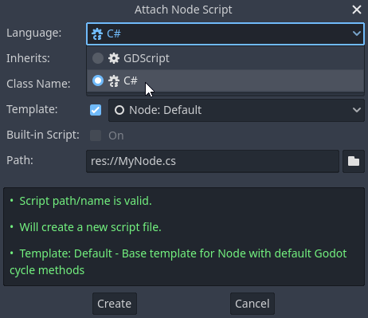

C# basics
Introduction
This page provides a brief introduction to C#, both what it is and how to use it in Godot. Afterwards, you may want to look at how to use specific features, read about the differences between the C# and the GDScript API, and (re)visit the Scripting section of the step-by-step tutorial.
C# is a high-level programming language developed by Microsoft. In Godot, it is implemented with the modern .NET runtime.
Attention
Projects written in C# using Godot 4 currently cannot be exported to the web platform. To use C# on the web platform, consider Godot 3 instead. Android and iOS platform support is available as of Godot 4.2, but is experimental and some limitations apply.
Note
This is not a full-scale tutorial on the C# language as a whole. If you aren't already familiar with its syntax or features, see the Microsoft C# guide or look for a suitable introduction elsewhere.
Prerequisites
Godot bundles the parts of .NET needed to run already-compiled games. However, Godot does not bundle the tools required to build and compile games, such as MSBuild and the C# compiler. These are included in the .NET SDK, and need to be installed separately.
In summary, you must have installed the .NET SDK and the .NET-enabled version of Godot.
Download and install the latest stable version of the SDK from the .NET download page. Godot 4.5 requires .NET 8 or later, but exporting to Android requires .NET 9 or later.
Important
Be sure to install the 64-bit version of the SDK(s) if you are using the 64-bit version of Godot.
If you are building Godot from source, make sure to follow the steps to enable .NET support in your build as outlined in the Compiling with .NET page.
Configuring an external editor
C# support in Godot's built-in script editor is minimal. Consider using an external IDE or editor, such as Visual Studio Code or Visual Studio. These provide autocompletion, debugging, and other useful features for C#. To select an external editor in Godot, click on Editor → Editor Settings and scroll down to Dotnet. Under Dotnet, click on Editor, and select your external editor of choice. Godot currently supports the following external editors:
Visual Studio 2022
Visual Studio Code
MonoDevelop
Visual Studio for Mac
JetBrains Rider
See the following sections for how to configure an external editor:
JetBrains Rider
After reading the "Prerequisites" section, you can download and install JetBrains Rider.
In Godot's Editor → Editor Settings menu:
Set Dotnet -> Editor -> External Editor to JetBrains Rider.
In Rider:
Set MSBuild version to .NET Core.
If you are using a Rider version below 2024.2, install the Godot support plugin. This functionality is now built into Rider.
Visual Studio Code
After reading the "Prerequisites" section, you can download and install Visual Studio Code (aka VS Code).
In Godot's Editor → Editor Settings menu:
Set Dotnet -> Editor -> External Editor to Visual Studio Code.
In Visual Studio Code:
Install the C# extension.
To configure a project for debugging, you need a tasks.json and launch.json file in
the .vscode folder with the necessary configuration.
Here is an example launch.json:
{
"version": "0.2.0",
"configurations": [
{
"name": "Play",
"type": "coreclr",
"request": "launch",
"preLaunchTask": "build",
"program": "${env:GODOT4}",
"args": [],
"cwd": "${workspaceFolder}",
"stopAtEntry": false,
}
]
}
For this launch configuration to work, you need to either setup a GODOT4
environment variable that points to the Godot executable, or replace program
parameter with the path to the Godot executable.
Here is an example tasks.json:
{
"version": "2.0.0",
"tasks": [
{
"label": "build",
"command": "dotnet",
"type": "process",
"args": [
"build"
],
"problemMatcher": "$msCompile"
}
]
}
Now, when you start the debugger in Visual Studio Code, your Godot project will run.
Visual Studio (Windows only)
Download and install the latest version of Visual Studio. Visual Studio will include the required SDKs if you have the correct workloads selected, so you don't need to manually install the things listed in the "Prerequisites" section.
While installing Visual Studio, select this workload:
.NET desktop development
In Godot's Editor → Editor Settings menu:
Set Dotnet -> Editor -> External Editor to Visual Studio.
Note
If you see an error like "Unable to find package Godot.NET.Sdk", your NuGet configuration may be incorrect and need to be fixed.
A simple way to fix the NuGet configuration file is to regenerate it.
In a file explorer window, go to %AppData%\NuGet. Rename or delete
the NuGet.Config file. When you build your Godot project again,
the file will be automatically created with default values.
To debug your C# scripts using Visual Studio, open the .sln file that is generated
after opening the first C# script in the editor. In the Debug menu, go to the
Debug Properties menu item for your project. Click the Create a new profile
button and choose Executable. In the Executable field, browse to the path
of the C# version of the Godot editor, or type %GODOT4% if you have created an
environment variable for the Godot executable path. It must be the path to the main Godot
executable, not the 'console' version. For the Working Directory, type a single period,
., meaning the current directory. Also check the Enable native code debugging
checkbox. You may now close this window, click downward arrow on the debug profile
dropdown, and select your new launch profile. Hit the green start button, and your
game will begin playing in debug mode.
Creating a C# script
After you successfully set up C# for Godot, you should see the following option when selecting Attach Script in the context menu of a node in your scene:

Note that while some specifics change, most concepts work the same when using C# for scripting. If you're new to Godot, you may want to follow the tutorials on Scripting languages at this point. While some documentation pages still lack C# examples, most notions can be transferred from GDScript.
Project setup and workflow
When you create the first C# script, Godot initializes the C# project files
for your Godot project. This includes generating a C# solution (.sln)
and a project file (.csproj), as well as some utility files and folders
(.godot/mono).
All of these but .godot/mono are important and should be committed to your
version control system. Everything under .godot can be safely added to the
ignore list of your VCS.
When troubleshooting, it can sometimes help to delete the .godot/mono folder
and let it regenerate.
Example
Here's a blank C# script with some comments to demonstrate how it works.
using Godot;
public partial class YourCustomClass : Node
{
// Member variables here, example:
private int _a = 2;
private string _b = "textvar";
public override void _Ready()
{
// Called every time the node is added to the scene.
// Initialization here.
GD.Print("Hello from C# to Godot :)");
}
public override void _Process(double delta)
{
// Called every frame. Delta is time since the last frame.
// Update game logic here.
}
}
As you can see, functions normally in global scope in GDScript like Godot's
print function are available in the GD static class which is part of
the Godot namespace. For a full list of methods in the GD class, see the
class reference pages for
@GDScript and @GlobalScope.
Note
Keep in mind that the class you wish to attach to your node should have the same
name as the .cs file. Otherwise, you will get the following error:
"Cannot find class XXX for script res://XXX.cs"
General differences between C# and GDScript
The C# API uses PascalCase instead of snake_case in GDScript/C++.
Where possible, fields and getters/setters have been converted to properties.
In general, the C# Godot API strives to be as idiomatic as is reasonably possible.
For more information, see the C# API differences to GDScript page.
Warning
You need to (re)build the project assemblies whenever you want to see new exported variables or signals in the editor. This build can be manually triggered by clicking the Build button in the top right corner of the editor.

You will also need to rebuild the project assemblies to apply changes in "tool" scripts.
Current gotchas and known issues
As C# support is quite new in Godot, there are some growing pains and things that need to be ironed out. Below is a list of the most important issues you should be aware of when diving into C# in Godot, but if in doubt, also take a look over the official issue tracker for .NET issues.
Writing editor plugins is possible, but it is currently quite convoluted.
State is currently not saved and restored when hot-reloading, with the exception of exported variables.
Attached C# scripts should refer to a class that has a class name that matches the file name.
There are some methods such as
Get()/Set(),Call()/CallDeferred()and signal connection methodConnect()that rely on Godot'ssnake_caseAPI naming conventions. So when using e.g.CallDeferred("AddChild"),AddChildwill not work because the API is expecting the originalsnake_caseversionadd_child. However, you can use any custom properties or methods without this limitation. Prefer using the exposedStringNamein thePropertyName,MethodNameandSignalNameto avoid extraStringNameallocations and worrying about snake_case naming.
As of Godot 4.0, exporting .NET projects is supported for desktop platforms (Linux, Windows and macOS). Other platforms will gain support in future 4.x releases.
Common pitfalls
You might encounter the following error when trying to modify some values in Godot
objects, e.g. when trying to change the X coordinate of a Node2D:
public partial class MyNode2D : Node2D
{
public override void _Ready()
{
Position.X = 100.0f;
// CS1612: Cannot modify the return value of 'Node2D.Position' because
// it is not a variable.
}
}
This is perfectly normal. Structs (in this example, a Vector2) in C# are
copied on assignment, meaning that when you retrieve such an object from a
property or an indexer, you get a copy of it, not the object itself. Modifying
said copy without reassigning it afterwards won't achieve anything.
The workaround is simple: retrieve the entire struct, modify the value you want to modify, and reassign the property.
var newPosition = Position;
newPosition.X = 100.0f;
Position = newPosition;
Since C# 10, it is also possible to use with expressions on structs, allowing you to do the same thing in a single line.
Position = Position with { X = 100.0f };
You can read more about this error on the C# language reference.
Performance of C# in Godot
See also
For a performance comparison of the languages Godot supports, see Which programming language is fastest?.
Most properties of Godot C# objects that are based on GodotObject
(e.g. any Node like Control or Node3D like Camera3D) require native (interop) calls as they talk to
Godot's C++ core.
Consider assigning values of such properties into a local variable if you need to modify or read them multiple times at
a single code location:
using Godot;
public partial class YourCustomClass : Node3D
{
private void ExpensiveReposition()
{
for (var i = 0; i < 10; i++)
{
// Position is read and set 10 times which incurs native interop.
// Furthermore the object is repositioned 10 times in 3D space which
// takes additional time.
Position += new Vector3(i, i);
}
}
private void Reposition()
{
// A variable is used to avoid native interop for Position on every loop.
var newPosition = Position;
for (var i = 0; i < 10; i++)
{
newPosition += new Vector3(i, i);
}
// Setting Position only once avoids native interop and repositioning in 3D space.
Position = newPosition;
}
}
Passing raw arrays (such as byte[]) or string to Godot's C# API requires marshalling which is
comparatively pricey.
The implicit conversion from string to NodePath or StringName incur both the native interop and marshalling
costs as the string has to be marshalled and passed to the respective native constructor.
Using NuGet packages in Godot
NuGet packages can be installed and used with Godot,
as with any C# project. Many IDEs are able to add packages directly.
They can also be added manually by adding the package reference in
the .csproj file located in the project root:
<ItemGroup>
<PackageReference Include="Newtonsoft.Json" Version="11.0.2" />
</ItemGroup>
...
</Project>
Godot automatically downloads and sets up newly added NuGet packages the next time it builds the project.
Profiling your C# code
The following tools may be used for performance and memory profiling of your managed code:
JetBrains Rider with dotTrace/dotMemory plugin.
Standalone JetBrains dotTrace/dotMemory.
Visual Studio.
Profiling managed and unmanaged code at once is possible with both JetBrains tools and Visual Studio, but limited to Windows.